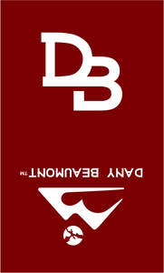

Trade Mark Journal No.2026/003 16 January 2026
UK00004256910 30 August 2025 (25)

- Class 25
- Clothing, Footwear, Headwear; Accessories therefor Clothing and clothing accessories, namely: , Belts as clothing , Sashes for clothing , Waistbands being parts of clothing , Suspenders for clothing , Shoulder straps being parts of clothing , Collars as parts of clothing , Cuffs as parts of clothing , Yokes as parts of clothing , Lapels being parts of clothing , Epaulettes for clothing , Panels being parts of garments , Insets being parts of clothing , Overlays being parts of clothing , Linings sold as an integral part of clothing , Hoods being parts of clothing , Sleeves being parts of garments , Pocket flaps being parts of clothing , Decorative trims sold as part of clothing , Fabric appliques sold as integral components of clothing , Logo patches sold as part of clothing , Embroidered logos applied to clothing , Decorative badges for clothing , Ornamental emblems for apparel , Printed graphic elements forming part of clothing , Reflective elements sold as part of clothing , Protective reinforcements being parts of clothing Headwear and headwear accessories: , Hats , Caps , Beanies , Visors , Headbands being clothing , Ear warmers being clothing , Head wraps as clothing , Bandanas being headwear , Sweatbands for headwear , Hat bands as part of headwear Footwear and footwear accessories: , Shoes , Boots , Sandals , Slippers , Footwear uppers , Footwear soles , Insoles for footwear , Footwear linings , Heel pieces for footwear , Shoe tongues , Gaiters , Spats being footwear , Leg warmers being clothing Apparel-related wearables: , Scarves , Shawls , Stoles , Gloves , Mittens , Socks , Hosiery , Tights , Stockings , Arm warmers being clothing , Wrist warmers being clothing , Neck warmers being clothing , Balaclavas , Face coverings being clothing.
Temiloluwa Oluwatofunmi Omoniyi